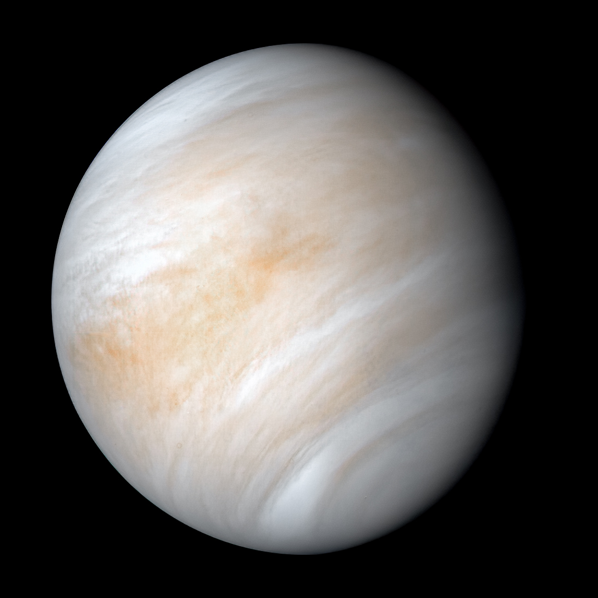

Venus is the second planet from the Sun. It is named after the Roman goddess of love and beauty. As the brightest natural object in Earth's night sky after the Moon, Venus can cast shadows and can be, on rare occasion, visible to the naked eye in broad daylight. Venus lies within Earth's orbit, and so never appears to venture far from the Sun, either setting in the west just after dusk or rising in the east a little while before dawn. Venus orbits the Sun every 224.7 Earth days. With a rotation period of 243 Earth days, it takes longer to rotate about its axis than any other planet in the Solar System by far, and does so in the opposite direction to all but Uranus (meaning the Sun rises in the west and sets in the east). Venus does not have any moons, a distinction it shares only with Mercury among the planets in the Solar System.
